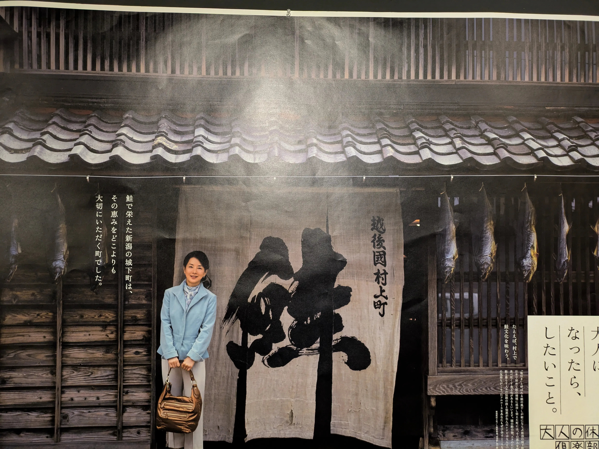

JOURNAL // 2026.05.04
村上・新潟：
記憶を繋ぐ1fpsの旅
01. 村上市 / Old Town

城下町の静寂。村上の空気は、新潟市の喧騒とは対照的な「影」の美しさを教えてくれる。
吊るされた鮭。その造形美は、自然が生んだストップモーション・オブジェクトだ。
レンタサイクル
三面川、宮尾酒造、大町、小町、安良町、庄内町、鍛冶町、寺町、肴町、千年鮭 きっかわ
村上市の歴史
村上市は、新潟県最北端に位置する歴史と伝統が息づく城下町です。戦国時代から江戸時代にかけて、村上城を中心に城下町が整備され、譜代大名が治める村上藩の政治・経済の中心として栄えました。武家屋敷や町屋、黒塀の美しい街並みが今も残り、当時の面影を色濃く伝えています。また、三面川（みおもてがわ）に遡上する鮭は、古くから村上の人々の生活を支えてきました。江戸時代には、青砥武平治による世界初の鮭の自然孵化増殖システム「種川の制」が考案され、鮭文化が大きく発展。「塩引き鮭」に代表される独自の食文化や、木彫堆朱（むらかみきぼりついしゅ）などの伝統工芸が、現在に受け継がれています。
02. 新潟市 / Bandai Bridge
信濃川を流れる光の粒。萬代橋のアーチが闇に浮かび上がる。
歴史と現代が交差する、港町ならではの美しい情景。
都市の鼓動をコマ撮りで切り取る。新潟市の夜は、青いネオンと車のヘッドライトが混ざり合い、サイバーパンクな回路図のように見える。

古町商店街に立ち並ぶ、水島新司作品のキャラクター銅像。
歴史ある古町商店街を歩けば、新潟出身の漫画家・水島新司氏が描いた名作のキャラクターたちと出会うことができる。ストップモーションのパペットのように今にも動き出しそうな躍動感を持つ銅像たちは、街の記憶と共に生き続けている。
新潟市の歴史
新潟市は、信濃川と阿賀野川という大河が日本海に注ぐ河口に位置し、古くから水上交通の要衝として栄えました。江戸時代には北前船の寄港地として繁栄し、日本海側最大級の港町として発展。幕末の1858年に結ばれた日米修好通商条約では、函館、横浜、神戸、長崎とともに開港5港の一つに選ばれ、国際貿易港としての歴史を歩み始めます。近代以降も、信濃川に架かる萬代橋に代表されるように、水と人々の営みが密接に結びついた「水の都」として発展を続け、本州日本海側で唯一の政令指定都市として、現在も国内外のヒト・モノ・文化が行き交う拠点となっています。
03. ARCHIVE MAP
04. 旅の動画
旅の思い出を記録した動画。